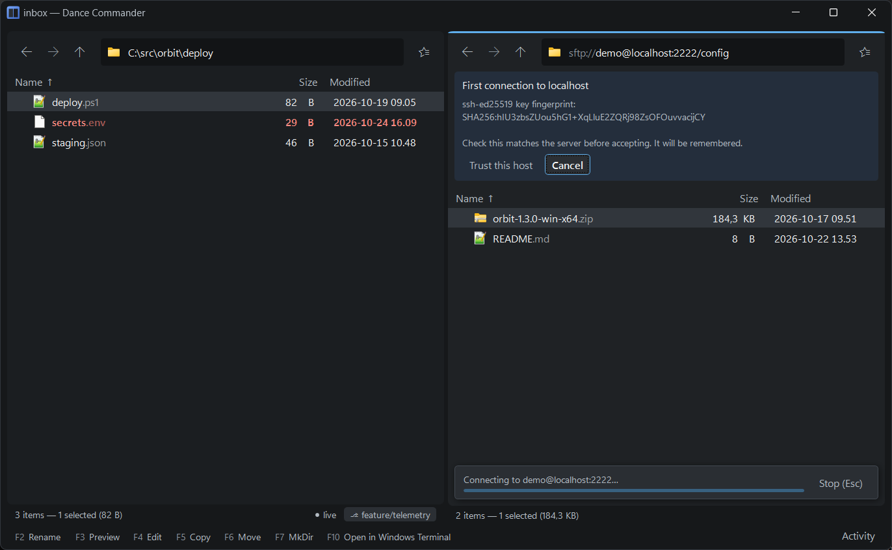
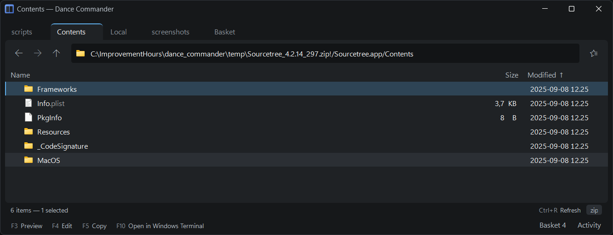

Servers and archives
A folder on a server, a folder inside a zip and a folder on your disk are the same kind of thing in Dance Commander. They list the same way, copy the same way, bookmark the same way, and nest: a zip on an SFTP server opens in place, and so does a tarball inside that zip.
Addresses
Type any of these into the address bar (Ctrl+L), bookmark them, or pass them on the command line.
| Address | Is |
|---|---|
C:\src\app | A local folder. file:///C:/src/app is the same place, and %USERPROFILE%\Downloads is expanded |
\\fileserver\share\docs | A Windows share, through Windows |
sftp://deploy@build01/var/log | A folder over SFTP; add :2222 after the host for another port |
davs://cloud.example.com/remote.php/dav/files/me | WebDAV over HTTPS; dav:// for plain HTTP |
C:\dl\release.zip!/bin | A folder inside an archive. ! marks each step into an archive, as deep as you like |
flat:C:\src | Every file below C:\src, in one listing |
search:C:/src?report | A search of C:\src for “report” |
everywhere:C:/src?report | A search that starts in C:\src and goes on to the places your files usually are |
about:computer | Drives and known folders. See the application's own pages |
from:C:/src?worktrees | A listing made by a command or script you configured. See Listings and script locations |
The address bar shows a place's scheme dimmed, so a server address reads as a server at a glance.
SFTP
Go to sftp://user@host/path. The first time, the pane asks two things inline:
- Whether to trust the server's host key. The SHA-256 fingerprint is shown;
check it against the server. Trust this host remembers it in
%APPDATA%\DanceCommander\known_hosts; Cancel is the default. If a known server's key ever changes, the pane says so plainly before anything is sent, because that is either a rebuilt server or someone in between. Do not connect is the default there; Replace the stored key is for when you know why it changed. - The password. Tick Remember this password to keep it in Windows
Credential Manager, under Windows Credentials as
DanceCommander:…; otherwise it is kept for this session only. A password the server refuses is forgotten, and you are asked again. Passwords are never written to a file, a log or the history.
The questions appear in the pane that is connecting, not over whatever you are doing in the other one. The loading line says Connecting to user@host… until the first rows arrive.
ssh, so your keys work there.)Connections are pooled and kept alive, so moving between folders on one server doesn't reconnect. If the connection drops, the pane says Lost the connection to …, and Ctrl+R connects again; a copy cut off says the same in its own words rather than the network's.
Listings add Perms and Owner columns (owner names are read from
the server where it allows it). Uploads are written to name.part and renamed into
place when complete, so a half-finished upload never sits under the real name. A file uploaded over
an existing one keeps that file's permissions, so a new build of a program stays executable; a new
file copied from an SFTP server takes its source's permissions, within what the server allows
a new file; from Windows, a script starting with
#! or a Linux executable is made executable. Each change of permissions is in the
activity log as a chmod.
Ctrl+E on a server runs the command line on the server,
in the folder you are looking at, over the connection already open. See
the command line. Ctrl+Shift+B
opens a shell on the server in that folder: an ssh session in a new Windows Terminal
tab.
Servers can't tell a client that a folder changed, so server folders aren't live: Ctrl+R refreshes. What you change from Dance Commander, including a finished copy, shows at once.

WebDAV
davs:// is WebDAV over HTTPS and dav:// over plain HTTP. It works with
Nextcloud, ownCloud, IIS, SharePoint and others: listing, upload, download, new folder, rename,
move (done on the server, so renaming a gigabyte is one request), delete, and
Compress into a zip.
- A server that wants a password asks for it in the pane, and Remember this password keeps it in Windows Credential Manager as for SFTP; a public share never asks. Windows sign-in (NTLM, Negotiate) is used where the server offers it, so there is nothing to type.
- Uploads go to a temporary name,
name.dc-upload-…, and take the real name only when complete. A file uploaded over an existing one sets the old one aside until the new one is in place. - On Nextcloud, large uploads go in 10 MB pieces, as Nextcloud's own clients send them, and the server joins them at the end, so a server that refuses one huge request still takes the file. At the end the strip says Waiting for … to finish, since joining a large file takes the server a while.
- On Nextcloud, Copy web link (right-click or the palette) puts the file's page in the web interface on the clipboard, for someone who will open it in a browser.
- A
dav://address that the server redirects to HTTPS is refused rather than followed, and the error names thedavs://address that works. Following it would silently lose your password on the way. - Errors are in words: “locked by someone else”, “the server has no room”, not a status code.
Archives
Enter on a zip, 7z, rar or tar goes inside it, and so does a file compressed with
gz, bz2 or xz: a compressed tar opens as its folders, a single compressed file as the one file
inside. What a file is comes from its content, not its name, so a tarball named
.gz still opens as one. You can browse, filter, preview with F3 and copy
out with F5, from a local archive or one on an SFTP server, and into archives inside
archives. Navigating inside one is instant after it is first opened, and recently used archives
stay open, so back and forward don't reopen them.
Archives are read-only: you can't change what is inside one in place, and a paste into one is
refused with a note. The menu offers Extract here (into a folder named after the
archive, beside it), Extract to other pane and Compress into a
zip. Zip is the one format Dance Commander writes; it is what anyone you send it to can
open. A zip of the same name already there asks Keep both or
Replace it, and a replaced zip goes to the Recycle Bin; where there is no Recycle
Bin, as on a server, only Keep both is offered. Entries that try to escape
the archive with .. in their path are rejected.
Office documents, OpenDocument files, EPUBs and other files that happen to be zips
(.docx, .xlsx, .odt, …) open in their application on
Enter, as you'd expect. Packages such as .jar and .nupkg open
as archives.

Zips whose headers some tools write oddly (Zip64 markers on every entry) still open: a zip the main reader refuses is read again with a second one.
Network drives
Mapped network drives and \\server\share paths work through Windows like any local
folder. Listing happens in the background, so a share that stops answering doesn't freeze the
window, and This computer marks such a drive not responding. A restored tab on a
disconnected drive opens the nearest folder that is still there, with a note. A share has no
Recycle Bin, so Del there asks before deleting permanently.
Other protocols, such as FTP, S3 or a cloud storage account, aren't built in. A cloud folder that syncs to your disk, such as OneDrive's, is an ordinary local folder.